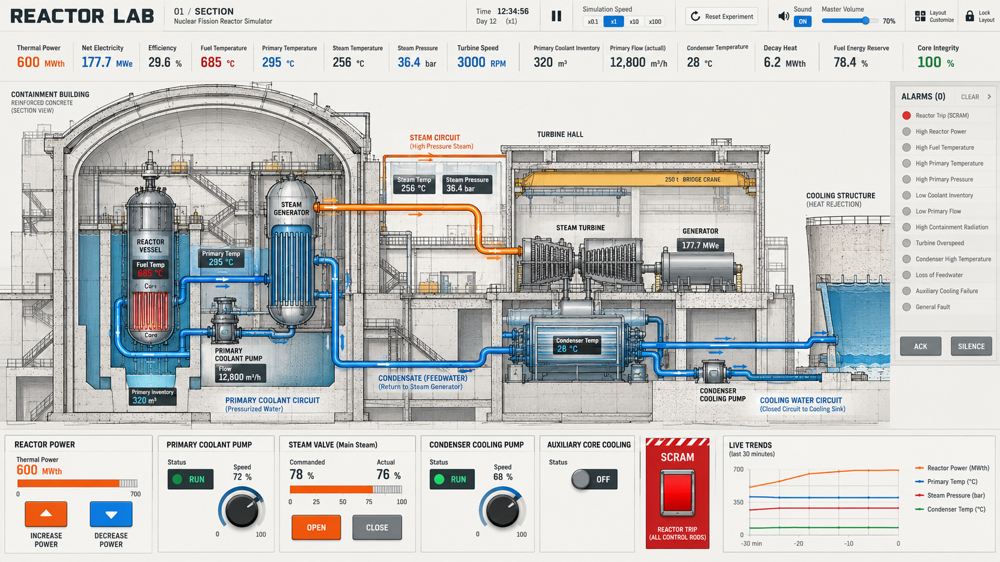
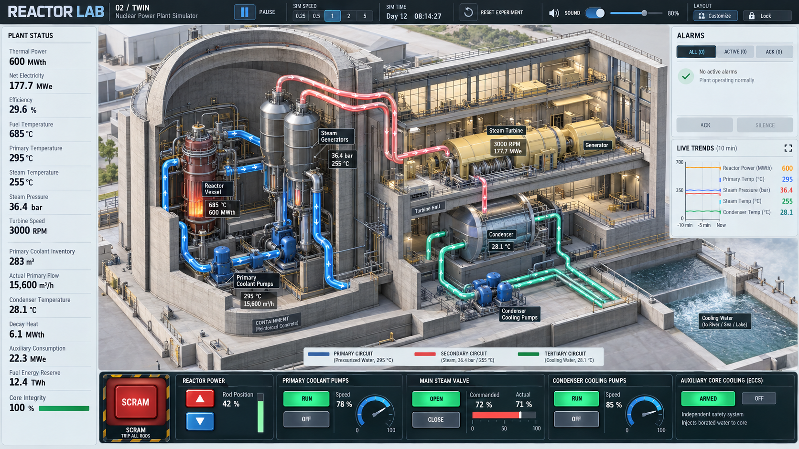
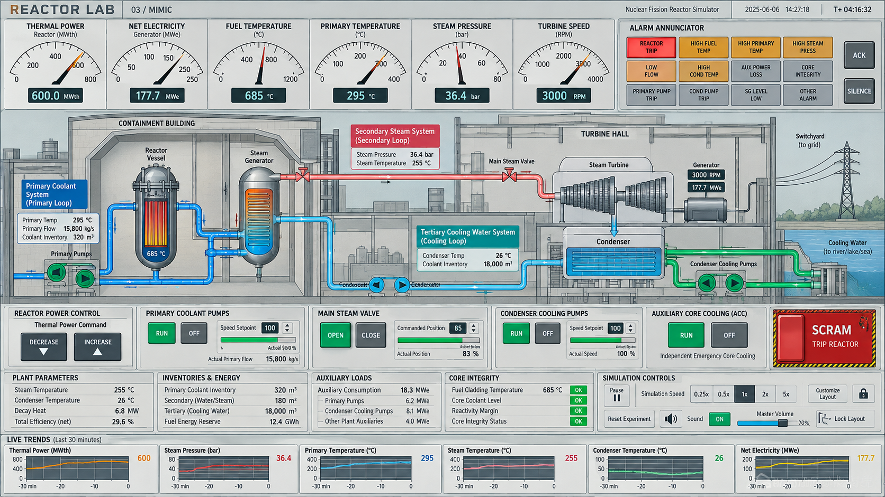
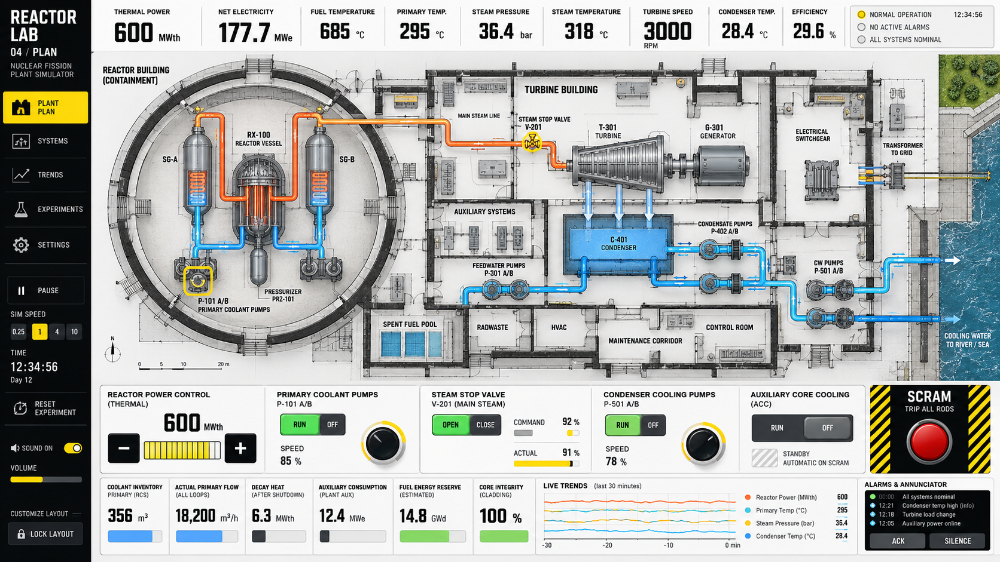
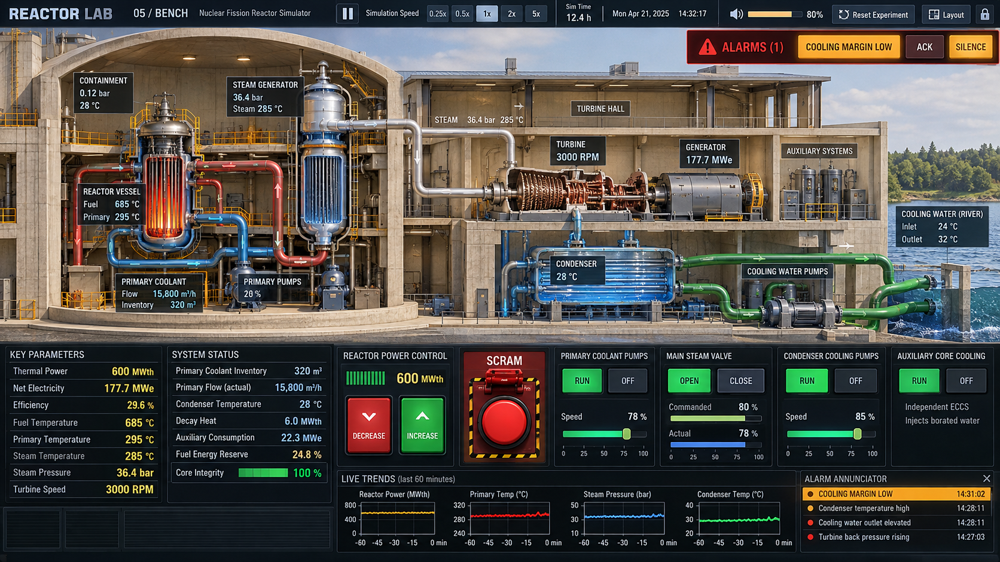
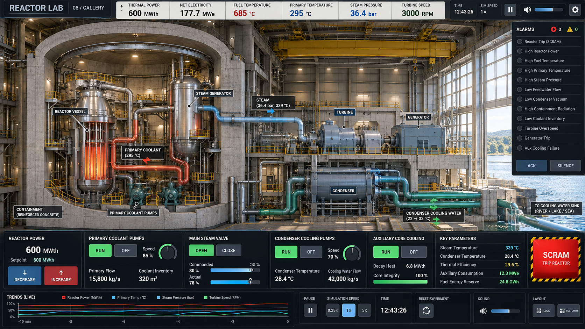

Reactor Lab · UI concepts
Concept art for choosing a visual direction. These are illustrations, not working interfaces or engineering drawings. Click an image to see it full size.
01 · Architectural section


02 · Isometric digital twin


03 · Traditional control workstation


04 · Building plan


05 · Physical sectional model


06 · Immersive plant interior
